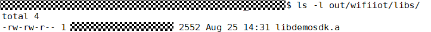

Third-Party SDK Integration¶
To build a more open and complete Internet of things (IoT) ecosystem, a group of directories is planned to integrate SDKs provided by different vendors into OpenHarmony. This document describes how to integrate SDKs into OpenHarmony based on the Hi3861 board.
Planning a Directory Structure¶
A third-party SDK consists of a static library and adaption code. The SDK service logic is compiled to obtain the static library libs through the hardware module tool chain. Each module has its corresponding libs. The southbound APIs of the SDK are different from the OpenHarmony APIs. The difference can be shielded by the adaptation code adapter. Different modules can share the same adapter.
The third-party SDK directories can be divided as follows in the OpenHarmony directory structure based on the preceding features:
The adaptation code adapter is stored in the ./domains/iot/link/ directory and is decoupled from the module.
The service library libs is stored in the ./vendor/hisi/hi3861/hi3861/3rd_sdk/ directory and is bound to the module.
You must perform the following steps before adaptation. The following uses the demolink SDK as an example.
Create the vendor directory ./domains/iot/link/demolink/ and ./vendor/hisi/hi3861/hi3861/3rd_sdk/demolink/ to isolate different vendors.
Create the ./domains/iot/link/demolink/BUILD.gn file to build the adaptation code.
Create the ./vendor/hisi/hi3861/hi3861/3rd_sdk/demolink/libs/ directory to store the service library libs.
.
├── domains
│ └── iot
│ └── link
│ ├── demolink
│ │ └── BUILD.gn
│ ├── libbuild
│ │ └── BUILD.gn
│ └── BUILD.gn
└── vendor
└── hisi
└── hi3861
└── hi3861
└── 3rd_sdk
└── demolink
└── libs
Building the Service libs¶
Generally, the platform SDK service is provided as a static library. After obtaining the OpenHarmony code, the platform vendor needs to compile the service libs based on the corresponding hardware module vendor and save the compilation result to the ./vendor/hisi/hi3861/hi3861/3rd_sdk/demolink/libs/ directory. The following describes how to build the service libs.
OpenHarmony has planned the ./domains/iot/link/libbuild/ directory for compiling the service libs. This directory contains the ./domains/iot/link/libbuild/BUILD.gn and ./domains/iot/link/BUILD.gn files. The directory structure is as follows:
.
└── domains
└── iot
└── link
├── demolink
│ └── BUILD.gn
├── libbuild
│ └── BUILD.gn
└── BUILD.gn
Before building libs, you must perform the following steps:
Place the service source code files (including .c and .h files) in the ./domains/iot/link/libbuild/ directory. After the compilation is complete, clear the source code files in the directory.
. └── domains └── iot └── link ├── demolink │ ├── demosdk_adapter.c │ ├── demosdk_adapter.h │ └── BUILD.gn ├── libbuild │ ├── demosdk.c │ ├── demosdk.h │ └── BUILD.gn └── BUILD.gnAdapt to the ./domains/iot/link/libbuild/BUILD.gn file and restore the file after the compilation is complete.
In BUILD.gn, sources is the source file to build, include_dirs is the path of the dependent header file, and the target build result is to generate the static library libdemosdk.a.
static_library("demosdk") { sources = [ "demosdk.c" ] include_dirs = [ "//domains/iot/link/libbuild", "//domains/iot/link/demolink" ] }
Adapt to the ./domains/iot/link/BUILD.gn file and restore the file after the compilation is complete.
The BUILD.gn file is used to specify build entries. You need to enter all static library entries to be compiled in features so that the ./domains/iot/link/libbuild/BUILD.gn file can participate in the build.
import("//build/lite/config/subsystem/lite_subsystem.gni") import("//build/lite/config/component/lite_component.gni") lite_subsystem("iot") { subsystem_components = [ ":link" ] } lite_component("link") { version = "1.0.0" dependences = [] features = [ "libbuild:demosdk" ] }
After the preceding operations are complete, run the python build.py wifiiot –target //domains/iot/link:iot command in the root directory of the code and then check whether the target library file is generated in the ./out/wifiiot/libs directory.

Copy the library file to the ./vendor/hisi/hi3861/hi3861/3rd_sdk/demolink/libs/ directory and delete the .c and .h files from the ./domains/iot/link/libbuild/ directory.
Compiling Adaptation Code¶
Compiling Code¶
The APIs used in the platform SDK are different from the OpenHarmony APIs and cannot be directly used. Therefore, the adaptation code adapter is required for intermediate conversion. This section uses DemoSdkCreateTask in ./domains/iot/link/demolink/demosdk_adapter.c as an example to describe how to compile adaptation code on OpenHarmony.
Check the description, parameters, and return values of DemoSdkCreateTask to adapt.
struct TaskPara { char *name; void *(*func)(char* arg); void *arg; unsigned char prio; unsigned int size; }; /* * IoT OS Creates a thread. * Returns <b>0</b> if the operation is successful; returns a non-zero value otherwise. */ int DemoSdkCreateTask(unsigned int *handle, const struct TaskPara *para);
Check the OpenHarmony API document, select an API with similar features, and compare the parameters and usage. This document uses osThreadNew as an example. By comparing this API with DemoSdkCreateTask, you can find that the parameters on which the two APIs depend are basically the same, but the structures to which the parameters belong are different.
typedef struct { const char *name; ///< name of the thread uint32_t attr_bits; ///< attribute bits void *cb_mem; ///< memory for control block uint32_t cb_size; ///< size of provided memory for control block void *stack_mem; ///< memory for stack uint32_t stack_size; ///< size of stack osPriority_t priority; ///< initial thread priority (default: osPriorityNormal) TZ_ModuleId_t tz_module; ///< TrustZone module identifier uint32_t reserved; ///< reserved (must be 0) } osThreadAttr_t; /// Create a thread and add it to Active Threads. /// \param[in] func thread function. /// \param[in] argument pointer that is passed to the thread function as start argument. /// \param[in] attr thread attributes; NULL: default values. /// \return thread ID for reference by other functions or NULL in case of error. osThreadId_t osThreadNew (osThreadFunc_t func, void *argument, const osThreadAttr_t *attr);
Convert the code differences.
int DemoSdkCreateTask(unsigned int *handle, const struct TaskPara *para) { osThreadAttr_t attr = {0}; osThreadId_t threadId; if (handle == 0 || para == 0) { return DEMOSDK_ERR; } if (para->func == 0) { return DEMOSDK_ERR; } if (para->name == 0) { return DEMOSDK_ERR; } attr.name = para->name; attr.priority = para->prio; attr.stack_size = para->size; threadId = osThreadNew((osThreadFunc_t)para->func, para->arg, &attr); if (threadId == 0) { printf("osThreadNew fail\n"); return DEMOSDK_ERR; } *(unsigned int *)handle = (unsigned int)threadId; return DEMOSDK_OK; }
Compiling a Script¶
After completing code adaptation, create the BUILD.gn file in the directory where the adapter is located. This file can be used to compile the adaptation code into a static library and link the static library to the bin package during the entire package build. In ./domains/iot/link/demolink/BUILD.gn, sources is the source files to be used in the build, include_dirs is the path of the dependent header file, and the target build result is to generate the static library libdemolinkadapter.a.
import("//build/lite/config/component/lite_component.gni")
static_library("demolinkadapter") {
sources = [
"demosdk_adapter.c"
]
include_dirs = [
"//kernel/liteos-m/components/kal/include",
"//kernel/liteos-m/components/cmsis/2.0",
"//domains/iot/link/demolink"
]
}
Change the ./domains/iot/link/BUILD.gn file to involve ./domain/iot/hilink/BUILD.gn in the build system.
import("//build/lite/config/subsystem/lite_subsystem.gni")
import("//build/lite/config/component/lite_component.gni")
lite_subsystem("iot") {
subsystem_components = [
":link"
]
}
lite_component("link") {
version = "1.0.0"
dependences = []
features = [
"demolink:demolinkadapter"
]
}
Compiling Service Code¶
After the service library libs and adaptation code are ready, compile the service entry function to invoke the service entry of the third-party SDK.
The following uses demolink as an example to describe how to compile code in ./applications/sample/wifi-iot/app/ to invoke the demosdk entry function.
Create a directory.
Before compiling a service, you must create a directory (or a directory structure) in ./applications/sample/wifi-iot/app/ to store service source code files.
For example, add the service directory demolink to the app, and create the service entry code helloworld.c and compile BUILD.gn.
. └── applications └── sample └── wifi-iot └── app │── demolink │ │── helloworld.c │ └── BUILD.gn └── BUILD.gnCompile service code.
Compile the service entry function DemoSdkMain in the helloworld.c file, invoke the service DemoSdkEntry of demolink, and invoke the entry function through SYS_RUN() to start the service.
#include "hos_init.h" #include "demosdk.h" void DemoSdkMain(void) { DemoSdkEntry(); } SYS_RUN(DemoSdkMain);
Compile build scripts.
Add the ./applications/sample/wifi-iot/app/demolink/BUILD.gn file, specify the paths of the source code and header file, and compile and output the static library file libexample_demolink.a.
static_library("example_demolink") { sources = [ "helloworld.c" ] include_dirs = [ "//utils/native/lite/include", "//domains/iot/link/libbuild" ] }
Change the ./applications/sample/wifi-iot/app/BUILD.gn file to enable the demolink to participate in compilation.
import("//build/lite/config/component/lite_component.gni") lite_component("app") { features = [ "demolink:example_demolink" ] }
Runtime¶
Run the python build.py wifiiot command in the root directory of the code to compile and output the version package. Start demolink. The following shows the running result, which is consistent with the expected result of demolink.
ready to OS start
sdk ver:Hi3861V100R001C00SPC024 2020-08-05 16:30:00
formatting spiffs...
FileSystem mount ok.
wifi init success!
it is demosdk entry.
it is demo biz: hello world.
it is demo biz: hello world.
End¶
The third-party SDK integration is complete.